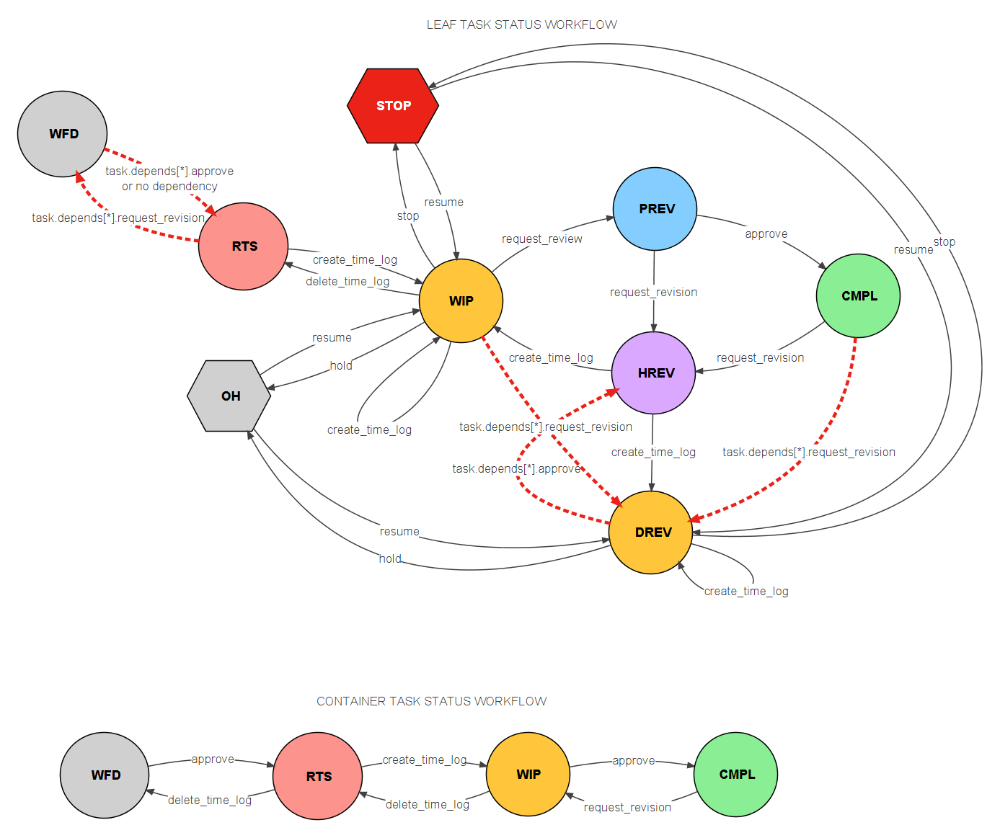

stalker.models.task.Task¶
digraph inheritancec854da7c82 { rankdir=LR; size="8.0, 12.0"; "Base" [shape=box,style="setlinewidth(0.5)",fontsize=10,fontname="Vera Sans, DejaVu Sans, Liberation Sans, Arial, Helvetica, sans",height=0.25]; "ORMClass" -> "Base" [arrowsize=0.5,style="setlinewidth(0.5)"]; "DAGMixin" [shape=box,style="setlinewidth(0.5)",fontsize=10,fontname="Vera Sans, DejaVu Sans, Liberation Sans, Arial, Helvetica, sans",height=0.25]; "DateRangeMixin" [style="setlinewidth(0.5)",URL="stalker.models.mixins.DateRangeMixin.html#stalker.models.mixins.DateRangeMixin",fontname="Vera Sans, DejaVu Sans, Liberation Sans, Arial, Helvetica, sans",height=0.25,shape=box,fontsize=10]; "Entity" [style="setlinewidth(0.5)",URL="stalker.models.entity.Entity.html#stalker.models.entity.Entity",fontname="Vera Sans, DejaVu Sans, Liberation Sans, Arial, Helvetica, sans",height=0.25,shape=box,fontsize=10]; "SimpleEntity" -> "Entity" [arrowsize=0.5,style="setlinewidth(0.5)"]; "ORMClass" [shape=box,style="setlinewidth(0.5)",fontsize=10,fontname="Vera Sans, DejaVu Sans, Liberation Sans, Arial, Helvetica, sans",height=0.25]; "ReferenceMixin" [style="setlinewidth(0.5)",URL="stalker.models.mixins.ReferenceMixin.html#stalker.models.mixins.ReferenceMixin",fontname="Vera Sans, DejaVu Sans, Liberation Sans, Arial, Helvetica, sans",height=0.25,shape=box,fontsize=10]; "ScheduleMixin" [style="setlinewidth(0.5)",URL="stalker.models.mixins.ScheduleMixin.html#stalker.models.mixins.ScheduleMixin",fontname="Vera Sans, DejaVu Sans, Liberation Sans, Arial, Helvetica, sans",height=0.25,shape=box,fontsize=10]; "SimpleEntity" [style="setlinewidth(0.5)",URL="stalker.models.entity.SimpleEntity.html#stalker.models.entity.SimpleEntity",fontname="Vera Sans, DejaVu Sans, Liberation Sans, Arial, Helvetica, sans",height=0.25,shape=box,fontsize=10]; "Base" -> "SimpleEntity" [arrowsize=0.5,style="setlinewidth(0.5)"]; "StatusMixin" [style="setlinewidth(0.5)",URL="stalker.models.mixins.StatusMixin.html#stalker.models.mixins.StatusMixin",fontname="Vera Sans, DejaVu Sans, Liberation Sans, Arial, Helvetica, sans",height=0.25,shape=box,fontsize=10]; "Task" [style="setlinewidth(0.5)",URL="#stalker.models.task.Task",fontname="Vera Sans, DejaVu Sans, Liberation Sans, Arial, Helvetica, sans",height=0.25,shape=box,fontsize=10]; "Entity" -> "Task" [arrowsize=0.5,style="setlinewidth(0.5)"]; "StatusMixin" -> "Task" [arrowsize=0.5,style="setlinewidth(0.5)"]; "DateRangeMixin" -> "Task" [arrowsize=0.5,style="setlinewidth(0.5)"]; "ReferenceMixin" -> "Task" [arrowsize=0.5,style="setlinewidth(0.5)"]; "ScheduleMixin" -> "Task" [arrowsize=0.5,style="setlinewidth(0.5)"]; "DAGMixin" -> "Task" [arrowsize=0.5,style="setlinewidth(0.5)"]; }
-
class
stalker.models.task.Task(project=None, parent=None, depends=None, resources=None, alternative_resources=None, responsible=None, watchers=None, start=None, end=None, schedule_timing=1.0, schedule_unit='h', schedule_model=None, schedule_constraint=0, bid_timing=None, bid_unit=None, is_milestone=False, priority=500, allocation_strategy='minallocated', persistent_allocation=True, good=None, **kwargs)¶ Bases:
stalker.models.entity.Entity,stalker.models.mixins.StatusMixin,stalker.models.mixins.DateRangeMixin,stalker.models.mixins.ReferenceMixin,stalker.models.mixins.ScheduleMixin,stalker.models.mixins.DAGMixinManages Task related data.
Introduction
Tasks are the smallest unit of work that should be accomplished to complete a
Project. Tasks define a certain amount of time needed to be spent for a purpose. They also define a complex hierarchy of relation.Stalker follows and enhances the concepts stated in TaskJuggler.
Note
New in version 0.2.0: References in Tasks
Tasks can now have References.
Initialization
Tasks are a part of a bigger Project, that’s way a Task needs to be created with a
Projectinstance. It is possible to create a task without a project, if it is created to be a child of another task. And it is also possible to pass both a project and a parent task.But because passing both a project and a parent task may create an ambiguity, Stalker will raise a RuntimeWarning, if both project and task are given and the owner project of the given parent task is different then the supplied project instance. But again Stalker will warn the user but will continue to use the task as the parent and will correctly use the project of the given task as the project of the newly created task.
The following codes are a couple of examples for creating Task instances:
# with a project instance >>> from stalker import Project >>> project1 = Project(name='Test Project 1') # simplified >>> task1 = Task(name='Schedule', project=project1) # with a parent task >>> task2 = Task(name='Documentation', parent=task1) # or both >>> task3 = Task(name='Test', project=project1, parent=task1) # this will create a RuntimeWarning >>> project2 = Project(name='Test Project 2') >>> task4 = Task(name='Test', project=project2, parent=task1) # task1 is not a # task of proj2 >>> assert task4.project == project1 # Stalker uses the task1.project for task4 # this will also create a RuntimeError >>> task3 = Task(name='Failure 2') # no project no parent, this is an # orphan task.Also initially Stalker will pin point the
startvalue and then will calculate properendanddurationvalues by using theschedule_timingandschedule_unitattributes. But these values (start, end and duration) are temporary values for an unscheduled task. The final date values will be calculated by TaskJuggler in the auto scheduling phase.Auto Scheduling
Stalker uses TaskJuggler for task scheduling. After defining all the tasks, Stalker will convert them to a single tjp file along with the recorded
TimeLogsVacations etc. and let TaskJuggler to solve the scheduling problem.During the auto scheduling (with TaskJuggler), the calculation of task duration, start and end dates are effected by the working hours setting of the
Studio, the effort that needs to spend for that task and the availability of the resources assigned to the task.A good practice for creating a project plan is to supply the parent/child and dependency relation between tasks and the effort and resource information per task and leave the start and end date calculation to TaskJuggler.
The default
schedule_modelfor Stalker tasks is ‘effort`, the defaultschedule_unitishourand the default value ofschedule_timingis defined by thestalker.config.Config.timing_resolution. So for a config where thetiming_resolutionis set to 1 hour the schedule_timing is 1.It is also possible to use the
lengthordurationvalues forschedule_model(set it to ‘effort’, ‘length’ or ‘duration’ to get the desired scheduling model).To convert a Task instance to a TaskJuggler compatible string use the
to_tjp`attribute. It will try to create a good representation of the Task by using the resources, schedule_model, schedule_timing and schedule_constraint attributes.** Alternative Resources**
New in version 0.2.5: Alternative Resources
Stalker now supports alternative resources per task. You can specify alternative resources by using the
alternative_resourcesattribute. The number of resources and the number of alternative resources are not related. So you can define only 1 resource and more than one alternative resources, or you can define 2 resources and only one alternative resource.Warning
As opposed to TaskJuggler alternative resources are not per resource based. So Stalker will use the alternatives list for all of the resources in the resources list. Per resource alternative will be supported in future versions of Stalker.
Stalker will pass the data to TaskJuggler and TJ will compute a list of resources that are assigned to the task in the report time frame and Stalker will store the resultant list of users in
computed_resourcesattribute.Warning
When TaskJuggler computes the resources, the returned list may contain resources which are not in the
resourcesnor inalternative_resourceslist anymore. Stalker will silently filter those resources and will only store resources (incomputed_resources) those are still available as a direct or alternative resource to that particular task.The selection strategy of the alternative resource is defined by the
allocation_strategyattribute. The allocation_strategy attribute value should be one of [minallocated, maxloaded, minloaded, order, random]. The following description is from TaskJuggler documentation:minallocated Pick the resource that has the smallest allocation factor. The allocation factor is calculated from the various allocations of the resource across the tasks. This is the default setting.) maxloaded Pick the available resource that has been used the most so far. minloaded Pick the available resource that has been used the least so far. order Pick the first available resource from the list. random Pick a random resource from the list. As in TaskJuggler the default for
allocation_strategyattribute is “minallocated”.Also the allocation of the resources are effected by the
persistent_allocationattribute. The persistent_allocation attribute refers to thepersistentattribute in TJ. The documentation ofpersistentin TJ is as follows:Specifies that once a resource is picked from the list of alternatives this resource is used for the whole task. This is useful when several alternative resources have been specified. Normally the selected resource can change after each break. A break is an interval of at least one timeslot where no resources were available.persistent_allocationattribute is True by default.For a not yet scheduled task the
computed_resourcesattribute will be the same as theresourceslist. After the task is scheduled the content of thecomputed_resourceswill purely come from TJ.Updating the resources list will not update the
computed_resourceslist if the taskis_scheduled.Task to Task Relation
Note
New in version 0.2.0.
Task to Task Relation
Tasks can have child Tasks. So you can create complex relations of Tasks to comply with your project needs.
A Task is called a
container taskif it has at least one child Task. And it is called aleaf taskif it doesn’t have any children Tasks. Tasks which doesn’t have a parent calledroot_task.As opposed to TaskJuggler where the resource information is passed through parent to child, in Stalker the resources in a container task is meaningless, cause the resources are defined by the child tasks.
Note
Although, the
tjp_task_templatevariable is not coded in that way in the default config, if you want to populate resource information through children tasks as it is in TaskJuggler, you can change thetjp_task_templatevariable with a local config.py file. See configuring stalkerAlthough the values are not very important after TaskJuggler schedules a task, the
startandendvalues for a container task is gathered from the child tasks. The start is equal to the earliest start value of the children tasks, and the end is equal to the latest end value of the children tasks. Of course, these values are going to be ignored by TaskJuggler, but for interactive gantt charts these are good toy attributes to play with.Stalker will check if there will be a cycle if one wants to parent a Task to a child Task of its own or the dependency relation creates a cycle.
In Gantt Charts the
computed_start,computed_endandcomputed_resourcesattributes will be used if the taskis_scheduled.Task Responsible
Note
New in version 0.2.0: Task Responsible
Note
New in version 0.2.5: Multiple Responsible Per Task
Tasks have a responsible which is a list of
Userinstances who are responsible of the assigned task and all the hierarchy under it.If a task doesn’t have any responsible, it will start looking to its parent tasks and will return the responsible of its parent and it will be an empty list if non of its parents has a responsible.
You can create complex responsibility chains for different branches of Tasks.
Percent Complete Calculation .. versionadded:: 0.2.0
Tasks can calculate how much it is completed based on the
schedule_secondsandtotal_logged_secondsattributes. For a parent task, the calculation is based on the totalschedule_secondsandtotal_logged_secondsattributes of their children. Even tough, the percent_complete attribute of a task is 100% the task may not be considered as completed, because it may not be reviewed and approved by the responsible yet.Task Review Workflow
New in version 0.2.5: Task Review Workflow
Starting with Stalker v0.2.5 tasks are reviewed by their responsible users. The reviews done by responsible users will set the task status according to the supplied reviews. Please see the
Reviewclass documentation for more details.Task Status Workflow
Note
New in version 0.2.5: Task Status Workflow
Task statuses now follow a workflow called “Task Status Workflow”.
The “Task Status Workflow” defines the different statuses that a Task will have along its normal life cycle. Container and leaf tasks will have different workflow using nearly the same set of statuses (container tasks have only 4 statuses where as leaf tasks have 9).
The following diagram shows the status workflow for leaf tasks:
The workflow defines the following statuses at described situations:
LEAF TASK STATUS WORKFLOW Status Name Description Waiting For Dependency (WFD) If a task has uncompleted dependencies then it will have its status to set to WFD. A WFD Task can not have a TimeLog or a review request can not be made for it. Ready To Start (RTS) A task is set to RTS when there are no dependencies or all of its dependencies are completed, so there is nothing preventing it to be started. An RTS Task can have new TimeLogs. A review can not be requested at this stage cause no work is done yet. Work In Progress (WIP) A task is set to WIP when a TimeLog has been created for that task. A WIP task can have new TimeLogs and a review can be requested for that task. Pending Review (PREV) A task is set to PREV when a new set of Review instances created for it by using the Task.request_review()method. And it is possible to request a review only for a task with status WIP. A PREV task can not have new TimeLogs nor a new request can be made because it is in already in review.Has Revision (HREV) A task is set to HREV when one of its Reviews completed by requesting a review by using the Review.request_review()method. A HREV Task can have new TimeLogs, and it will be converted to a WIP or DREV depending to its dependency task statuses.Dependency Has Revision (DREV) If the dependent task of a WIP, PREV, HREV, DREV or CMPL task has a revision then the statuses of the tasks are set to DREV which means both of the dependee and the dependent tasks can work at the same time. For a DREV task a review request can not be made until it is set to WIP again by setting the depending task to CMPL again. On Hold (OH) A task is set to OH when the resource needs to work for another task, and the Task.hold()is called. An OH Task can be resumed by callingTask.resume()method and depending to itsTask.time_logsattribute it will have its status set to RTS or WIP.Stopped (STOP) A task is set to STOP when no more work needs to done for that task and it will not be used anymore. Call
Task.stop()method to do it properly. Only applicable to WIP tasks.The schedule values of the task will be capped to current time spent on it, so Task Juggler will not reserve any more resources for it.
Also STOP tasks are treated as if they are dead.
Completed (CMPL) A task is set to CMPL when all of the Reviews are completed by approving the task. It is not possible to create any new TimeLogs and no new review can be requested for a CMPL Task. Container “Task Status Workflow” defines a set of statuses where the container task status will only change according to its children task statuses:
CONTAINER TASK STATUS WORKFLOW Status Name Description Waiting For Dependency (WFD) If all of the child tasks are in WFD status then the container task is also WFD. Ready To Start (RTS) A container task is set to RTS when children tasks have statuses of only WFD and RTS. Work In Progress (WIP) A container task is set to WIP when one of its children tasks have any of the statuses of RTS, WIP, PREV, HREV, DREV or CMPL. Completed (CMPL) A container task is set to CMPL when all of its children tasks are CMPL. Even though, users are encouraged to use the actions (like
Task.create_time_log(),Task.hold(),Task.stop(),Task.resume(),Task.request_revision(),Task.request_review(),Task.approve()) to update the task statuses , setting theTask.statuswill also update the dependent tasks or will check the new status against dependencies or the current status of the task.Thus in some situations setting the
Task.statuswill not change the status of the task. For example, setting the task status to WFD when there are no dependencies will not update the task status to WFD, also updating a PREV task status to STOP or HOLD or RTS is not possible. And it is not possible to set a task to WIP if there are no TimeLogs entered for that task.So the task will strictly follow the Task Status Workflow diagram above.
Warning
Dependency Relation in Task Status Workflow
Because the Task Status Workflow heavily effected by the dependent task statuses, and the main reason of having dependency relation is to let TaskJuggler to schedule the tasks correctly, and any task status other than WFD or RTS means that a TimeLog has been created for a task (which means that you can not change the
computed_startanymore), it is only allowed to change the dependencies of a WFD and RTS tasks.Warning
Resuming a STOP Task
Resuming a STOP Task will be treated as if a revision has been made to that task, and all the statuses of the tasks depending to this particular task will be updated accordingly.
Warning
Initial Status of a Task
New in version 0.2.5.
Because of the Task Status Workflow, supplying a status with the status argument may not set the status of the Task to the desired value. A Task starts with WFD status by default, and updated to RTS if it doesn’t have any dependencies or all of the dependencies are STOP or CMPL.
Note
New in version 0.2.5.2: Task.path and Task.absolute_path properties
Task instances now have two new properties called
pathandabsolute_path. The value of these attributes are the rendered version of the relatedFilenameTemplatewhich has its target_entity_type attribute set to “Task” (or “Asset”, “Shot” or “Sequence” or anything matching to the derived class name, so it can be used inAsset,ShotandSequencesor anything that is derived from Task class) in theProjectthat this task belongs to. This property has been added to make it easier to write custom template codes for ProjectStructures.The
pathattribute is a repository relative path, where as theabsolute_pathis the full path and includs the OS dependent repository path.Arguments
Parameters: - project (
Project) – A Task which doesn’t have a parent (a root task) should be created with aProjectinstance. If it is skipped an noparentis given then Stalker will raise a RuntimeError. If both theprojectand theparentargument contains data and the project of the Task instance given with parent argument is different than the Project instance given with theprojectargument then a RuntimeWarning will be raised and the project of the parent task will be used. - parent (
Task) – The parent Task or Project of this Task. Every Task in Stalker should be related with aProjectinstance. So if no parent task is desired, at least a Project instance should be passed as the parent of the created Task or the Task will be an orphan task and Stalker will raise a RuntimeError. - depends ([
Task]) – A list ofTasks that thisTaskis depending on. A Task can not depend to itself or any other Task which are already depending to this one in anyway or a CircularDependency error will be raised. - resources ([
User]) – TheUsers assigned to thisTask. ATaskwithout any resource can not be scheduled. - responsible ([
User]) – A list ofUserinstances that is responsible of this task. - watchers ([
User]) – A list ofUserthose are added this Task instance to their watchlist. - start (
datetime.datetime) – The start date and time of this task instance. It is only used if theschedule_constraintattribute is set toCONSTRAIN_STARTorCONSTRAIN_BOTH. The default value is datetime.datetime.now(). - end (
datetime.datetime) – The end date and time of this task instance. It is only used if theschedule_constraintattribute is set toCONSTRAIN_ENDorCONSTRAIN_BOTH. The default value is datetime.datetime.now(). - schedule_timing (int) – The value of the schedule timing.
- schedule_unit (str) – The unit value of the schedule timing. Should be one of ‘min’, ‘h’, ‘d’, ‘w’, ‘m’, ‘y’.
- schedule_constraint (int) – The schedule constraint. It is the index
of the schedule constraints value in
stalker.config.Config.task_schedule_constraints. - bid_timing (int) – The initial bid for this Task. It can be used in measuring how accurate the initial guess was. It will be compared against the total amount of effort spend doing this task. Can be set to None, which will be set to the schedule_timing_day argument value if there is one or 0.
- bid_unit (str) – The unit of the bid value for this Task. Should be one of the ‘min’, ‘h’, ‘d’, ‘w’, ‘m’, ‘y’.
- is_milestone (bool) – A bool (True or False) value showing if this task is a milestone which doesn’t need any resource and effort.
- priority (int) –
It is a number between 0 to 1000 which defines the priority of the
Task. The higher the value the higher its priority. The default value is 500. Mainly used by TaskJuggler.Higher priority tasks will be scheduled to an early date or at least will tried to be scheduled to an early date then a lower priority task (a task that is using the same resources).
In complex projects, a task with a lower priority task may steal resources from a higher priority task, this is due to the internals of TaskJuggler, it tries to increase the resource utilization by letting the lower priority task to be completed earlier than the higher priority task. This is done in that way if the lower priority task is dependent of more important tasks (tasks in critical path or tasks with critical resources). Read TaskJuggler documentation for more information on how TaskJuggler schedules tasks.
- allocation_strategy – Defines the allocation strategy for resources
of a task with alternative resources. Should be one of [‘minallocated’,
‘maxloaded’, ‘minloaded’, ‘order’, ‘random’] and the default value is
‘minallocated’. For more information read the
Taskclass documetation. - persistent_allocation – Specifies that once a resource is picked from
the list of alternatives this resource is used for the whole task. The
default value is True. For more information read the
Taskclass documentation. - good – It is possible to attach a good to this Task to be able to filter and group them later on.
-
__init__(project=None, parent=None, depends=None, resources=None, alternative_resources=None, responsible=None, watchers=None, start=None, end=None, schedule_timing=1.0, schedule_unit='h', schedule_model=None, schedule_constraint=0, bid_timing=None, bid_unit=None, is_milestone=False, priority=500, allocation_strategy='minallocated', persistent_allocation=True, good=None, **kwargs)¶
Methods
__init__([project, parent, depends, ...])create_time_log(resource, start, end)A helper method to create TimeLogs, this will ease creating TimeLog instances for task. hold()Pauses the execution of this task by setting its status to OH. request_review()Creates and returns Review instances for each of the responsible of this task and sets the task status to PREV. request_revision([reviewer, description, ...])Requests revision. resume()Resumes the execution of this task by setting its status to RTS or WIP depending to its time_logs attribute, so if it has TimeLogs then it will resume as WIP and if it doesn’t then it will resume as RTS. review_set([review_number])returns the reviews with the given review_number, if review_number stop()Stops this task. update_parent_statuses()updates the parent statuses of this task if any update_schedule_info()updates the total_logged_seconds and schedule_seconds attributes by update_status_with_children_statuses()updates the task status according to its children statuses update_status_with_dependent_statuses([removing])updates the status by looking at the dependent tasks walk_dependencies([method])Walks the dependencies of this task Attributes
absolute_paththe absolute_path attribute computed_durationreturns the computed_duration as the difference of computed_start computed_total_secondsreturns the duration as seconds is_containerReturns True if the Task has children Tasks is_leafReturns True if the Task has no children Tasks is_rootReturns True if the Task has no parent is_scheduledA predicate which returns True if this task has both a levelReturns the level of this task. nice_nameNice name of this object. open_ticketsreturns the open tickets referencing this task in their links parentsReturns all of the parents of this mixed in class starting from the pathThe path attribute will generate a path suitable for placing the files under it. percent_completereturns the percent_complete based on the total_logged_seconds and plural_class_namethe plural name of this class remaining_secondsreturns the remaining amount of efforts, length or duration left ticketsreturns the tickets referencing this task in their links attribute tjp_abs_idreturns the calculated absolute id of this task tjp_idreturns TaskJuggler compatible id to_tjpTaskJuggler representation of this task total_secondsreturns the duration as seconds -
absolute_path¶ the absolute_path attribute
-
bid_timing¶ The value of the initial bid of this Task. It is an integer or a float.
-
bid_unit¶ The unit of the initial bid of this Task. It is a string value. And should be one of ‘min’, ‘h’, ‘d’, ‘w’, ‘m’, ‘y’.
-
children¶ Other
Budgetinstances which are the children of this one. This attribute along with theparentattribute is used in creating a DAG hierarchy of tasks.
-
computed_duration¶ returns the computed_duration as the difference of computed_start and computed_end if there are computed_start and computed_end otherwise returns None
-
computed_end¶ A
datetimeinstance showing the end value computed by TaskJuggler. It is None if this task is not scheduled yet.
-
computed_resources¶ getter for the _computed_resources attribute
-
computed_start¶ A
datetimeinstance showing the start value computed by TaskJuggler. It is None if this task is not scheduled yet.
-
computed_total_seconds¶ returns the duration as seconds
-
create_time_log(resource, start, end)¶ A helper method to create TimeLogs, this will ease creating TimeLog instances for task.
-
date_created¶ A
datetime.datetimeinstance showing the creation date and time of this object.
-
date_updated¶ A
datetime.datetimeinstance showing the update date and time of this object.
-
description¶ Description of this object.
-
duration¶ Duration of the entity.
It is a datetime.timedelta instance. Showing the difference of the
startand theend. If edited it changes theendattribute value.
-
end¶ overridden end getter
-
generic_data¶ This attribute can hold any kind of data which exists in SOM.
-
generic_text¶ This attribute can hold any text.
-
hold()¶ Pauses the execution of this task by setting its status to OH. Only applicable to RTS and WIP tasks, any task with other statuses will raise a ValueError.
-
is_container¶ Returns True if the Task has children Tasks
-
is_leaf¶ Returns True if the Task has no children Tasks
-
is_milestone¶ Specifies if this Task is a milestone.
Milestones doesn’t need any duration, any effort and any resources. It is used to create meaningful dependencies between the critical stages of the project.
-
is_root¶ Returns True if the Task has no parent
-
is_scheduled¶ A predicate which returns True if this task has both a computed_start and computed_end values
-
least_meaningful_time_unit(seconds, as_work_time=True)¶ returns the least meaningful timing unit that corresponds to the given seconds. So if:
- as_work_time == True
- seconds % (1 years work time as seconds) == 0 –> ‘y’ else: seconds % (1 month work time as seconds) == 0 –> ‘m’ else: seconds % (1 week work time as seconds) == 0 –> ‘w’ else: seconds % (1 day work time as seconds) == 0 –> ‘d’ else: seconds % (1 hour work time as seconds) == 0 –> ‘h’ else: seconds % (1 minutes work time as seconds) == 0 –> ‘min’ else: raise RuntimeError
- as_work_time == False
- seconds % (1 years as seconds) == 0 –> ‘y’ else: seconds % (1 month as seconds) == 0 –> ‘m’ else: seconds % (1 week as seconds) == 0 –> ‘w’ else: seconds % (1 day as seconds) == 0 –> ‘d’ else: seconds % (1 hour as seconds) == 0 –> ‘h’ else: seconds % (1 minutes as seconds) == 0 –> ‘min’ else: raise RuntimeError
Parameters: Returns int, string: Returns one integer and one string, showing the timing value and the unit.
-
level¶ Returns the level of this task. It is a temporary property and will be useless when Stalker has its own implementation of a proper Gantt Chart. Write now it is used by the jQueryGantt.
-
name¶ Name of this object
-
nice_name¶ Nice name of this object.
It has the same value with the name (contextually) but with a different format like, all the white spaces replaced by underscores (“_”), all the CamelCase form will be expanded by underscore (_) characters and it is always lower case.
-
notes¶ All the
Notess attached to this entity.It is a list of
Noteinstances or an empty list, setting it to None will raise a TypeError.
-
open_tickets¶ returns the open tickets referencing this task in their links attribute
-
parent¶ A
Taskinstance which is the parent of this Task. In Stalker it is possible to create a hierarchy of Task.
-
parents¶ Returns all of the parents of this mixed in class starting from the root
-
path¶ The path attribute will generate a path suitable for placing the files under it. It will use the
FilenameTemplateclass related to theProjectStructurewith thetarget_entity_typeis set to the type of this instance.
-
percent_complete¶ returns the percent_complete based on the total_logged_seconds and schedule_seconds of the task. Container tasks will use info from their children
-
plural_class_name¶ the plural name of this class
-
priority¶ An integer number between 0 and 1000 used by TaskJuggler to determine the priority of this Task. The default value is 500.
-
project¶ The owner Project of this task.
It is a read-only attribute. It is not possible to change the owner Project of a Task it is defined when the Task is created.
-
project_id¶ The id of the owner
Projectof this Task. This attribute is mainly used by SQLAlchemy to map aProjectinstance to a Task.
-
remaining_seconds¶ returns the remaining amount of efforts, length or duration left in this Task as seconds.
-
request_review()¶ Creates and returns Review instances for each of the responsible of this task and sets the task status to PREV.
New in version 0.2.0: Request review will not cap the timing of this task anymore.
Only applicable to leaf tasks.
-
request_revision(reviewer=None, description='', schedule_timing=1, schedule_unit='h')¶ Requests revision.
Applicable to PREV or CMPL leaf tasks. This method will expand the schedule timings of the task according to the supplied arguments.
When request_revision is called on a PREV task, the other NEW Review instances (those created when request_review on a WIP task is called and still waiting a review) will be deleted.
This method at the end will return a new Review instance with correct attributes (reviewer, description, schedule_timing, schedule_unit and review_number attributes).
Parameters: reviewer (class:.User) – This is the user that requested the revision. He/she doesn’t need to be the responsible, anybody that has a Permission to create a Review instance can request a revision.
-
responsible¶ The responsible of this task.
This attribute will return the responsible of this task which is a list of
Userinstances. If there is no responsible set for this task, then it will try to find a responsible in its parents.
-
resume()¶ Resumes the execution of this task by setting its status to RTS or WIP depending to its time_logs attribute, so if it has TimeLogs then it will resume as WIP and if it doesn’t then it will resume as RTS. Only applicable to Tasks with status OH.
-
review_number¶ returns the _review_number attribute value
-
review_set(review_number=None)¶ returns the reviews with the given review_number, if review_number is skipped it will return the latest set of reviews
-
round_time(dt)¶ Round the given datetime object to the defaults.timing_resolution.
Uses
stalker.defaults.timing_resolutionas the closest number of seconds to round to.Parameters: dt (datetime.datetime) – datetime.datetime object, defaults to now. Based on Thierry Husson’s answer in Stackoverflow
Stackoverflow : http://stackoverflow.com/a/10854034/1431079
-
schedule_constraint¶ An integer number showing the constraint schema for this task.
Possible values are:
0 Constrain None 1 Constrain Start 2 Constrain End 3 Constrain Both For convenience use stalker.models.task.CONSTRAIN_NONE, stalker.models.task.CONSTRAIN_START, stalker.models.task.CONSTRAIN_END, stalker.models.task.CONSTRAIN_BOTH.
This value is going to be used to constrain the start and end date values of this task. So if you want to pin the start of a task to a certain date. Set its
schedule_constraintvalue to CONSTRAIN_START. When the task is scheduled by TaskJuggler the start date will be pinned to thestartattribute of this task.And if both of the date values (start and end) wanted to be pinned to certain dates (making the task effectively a
durationtask) set the desiredstartandendand then set theschedule_constraintto CONSTRAIN_BOTH.
-
schedule_model¶ Defines the schedule model which is going to be used by TaskJuggler while scheduling this Task. It has three possible values; effort, duration, length.
effortis the default value. Each value causes this task to be scheduled in different ways:effort If the schedule_modelattribute is set to “effort” then the start and end date values are calculated so that a resource should spent this much of work time to complete a Task. For example, a task withschedule_timingof 4 days, needs 4 working days. So it can take 4 working days to complete the Task, but it doesn’t mean that the task duration will be 4 days. If the resource works overtime then the task will be finished before 4 days or if the resource will not be available (due to a vacation) then the task duration can be much more.duration The duration of the task will exactly be equal to schedule_timingregardless of the resource availability. So the difference betweenstartandendattribute values are equal toschedule_timing. Essentially making the task duration in calendar days instead of working days.length In this model the duration of the task will exactly be equal to the given length value in working days regardless of the resource availability. So a task with the schedule_timingis set to 4 days will be completed in 4 working days. But again it will not be always 4 calendar days due to the weekends or non working days.
-
schedule_seconds¶ returns the total effort, length or duration in seconds, for completeness calculation
-
schedule_timing¶ It is the value of the schedule timing. It is a float value.
The timing value can either be as Work Time or Calendar Time defined by the schedule_model attribute. So when the schedule_model is duration then the value of this attribute is in Calendar Time, and if the schedule_model is either length or effort then the value is considered as Work Time.
-
schedule_unit¶ It is the unit of the schedule timing. It is a string value. And should be one of ‘min’, ‘h’, ‘d’, ‘w’, ‘m’, ‘y’.
-
start¶ overridden start getter
-
status¶ The current status of the object.
It is a
Statusinstance which is one of the Statuses stored in thestatus_listattribute of this object.
-
stop()¶ Stops this task. It is nearly equivalent to deleting this task. But this will at least preserve the TimeLogs entered for this task. It is only possible to stop WIP tasks.
You can use
resume()to resume the task.The only difference between
hold()(other than setting the task to different statuses) is the schedule info, while thehold()method will preserve the schedule info, stop() will set the schedule info to the current effort.So if 2 days of effort has been entered for a 4 days task, when stopped the task effort will be capped to 2 days, thus TaskJuggler will not try to reserve any resource for this task anymore.
Also, STOP tasks will be ignored in dependency relations.
A list of tags attached to this object.
It is a list of
Taginstances which shows the tags of this object
-
task_dependent_of¶ A list of
Tasks that this one is being depended by.A CircularDependencyError will be raised when the task dependency creates a circular dependency which means it is not allowed to create a dependency for this Task which is depending on another one which in some way depends to this one again.
-
task_depends_to¶ A list of
Tasks that this one is depending on.A CircularDependencyError will be raised when the task dependency creates a circular dependency which means it is not allowed to create a dependency for this Task which is depending on another one which in some way depends to this one again.
-
task_id¶ The
primary_keyattribute for theTaskstable used by SQLAlchemy to map this Task in relationships.
-
tasks¶ A synonym for the
childrenattribute used by the descendants of theTaskclass (currentlyAsset,ShotandSequenceclasses).
-
tickets¶ returns the tickets referencing this task in their links attribute
-
tjp_abs_id¶ returns the calculated absolute id of this task
-
tjp_id¶ returns TaskJuggler compatible id
-
to_seconds(timing, unit, model)¶ converts the schedule values to seconds, depending on to the schedule_model the value will differ. So if the schedule_model is ‘effort’ or ‘length’ then the schedule_time and schedule_unit values are interpreted as work time, if the schedule_model is ‘duration’ then the schedule_time and schedule_unit values are considered as calendar time.
-
to_tjp¶ TaskJuggler representation of this task
-
total_logged_seconds¶ The total effort spent for this Task. It is the sum of all the TimeLogs recorded for this task as seconds.
Returns int: An integer showing the total seconds spent.
-
total_seconds¶ returns the duration as seconds
-
type¶ The type of the object.
It is an instance of
Typewith a properType.target_entity_type.
-
type_id¶ The id of the
Typeof this entity. Mainly used by SQLAlchemy to create a Many-to-One relates between SimpleEntities and Types.
-
update_parent_statuses()¶ updates the parent statuses of this task if any
-
update_schedule_info()¶ updates the total_logged_seconds and schedule_seconds attributes by using the children info and triggers an update on every children
-
update_status_with_children_statuses()¶ updates the task status according to its children statuses
-
update_status_with_dependent_statuses(removing=None)¶ updates the status by looking at the dependent tasks
Parameters: removing – The item that is been removing right now, used for the remove event to overcome the update issue.
-
walk_dependencies(method=1)¶ Walks the dependencies of this task
Parameters: method – The walk method, 0: Depth First, 1: Breadth First
-
walk_hierarchy(method=0)¶ Walks the hierarchy of this task.
Parameters: method – The walk method, 0: Depth First, 1: Breadth First
- project (
{kind=link}